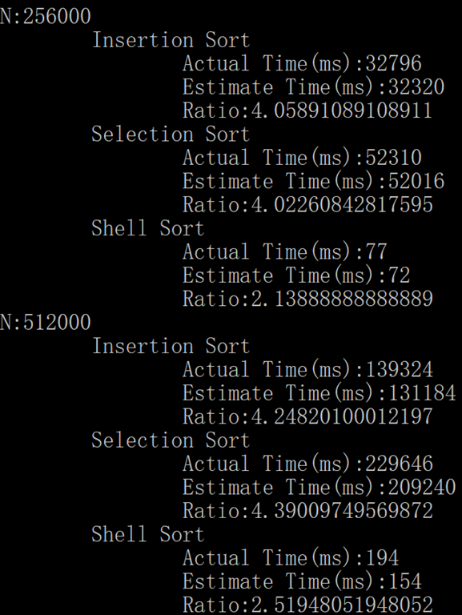

© 2020 《算法（第四版）》C# 题解 | Provided By 沈星繁
搜索解答
目前已完成到 3.2
2.1.31
上次更新：2019-04-17
发现了题解错误/代码缺陷/排版问题？请点这里：如何：提交反馈 。
解答
这里截取数据量比较大的时候的数据。
插入排序和选择排序显然都是平方级别的。
希尔排序猜测是线性的，实际上要比线性大一点（次平方级）。

代码
using System;
using Sort;
namespace _2._1._31
{
/*
* 2.1.31
*
* 双倍测试。
* 编写一个能够对排序算法进行双倍测试的用例。
* 数组规模 N 的起始值为 1000，
* 排序后打印 N、估计排序用时、实际排序用时以及在 N 倍增之后两次用时的比例。
* 用这段程序验证在随机输入模型下插入排序和选择排序的运行时间都是平方级别的。
* 对希尔排序的性能做出猜想并验证你的猜想。
*
*/
class Program
{
static void Main(string[] args)
{
int N = 1000;
InsertionSort insertion = new InsertionSort();
SelectionSort selection = new SelectionSort();
ShellSort shell = new ShellSort();
double prevInsertion = 0;
double prevSelection = 0;
double prevShell = 0;
for (int i = 0; i < 10; i++)
{
Console.WriteLine("N:" + N);
int[] array = SortCompare.GetRandomArrayInt(N);
int[] arrayBak = new int[N];
array.CopyTo(arrayBak, 0);
Console.WriteLine("\tInsertion Sort");
double now = SortCompare.Time(insertion, array);
Console.WriteLine("\t\tActual Time(ms):" + now);
if (i != 0)
{
Console.WriteLine("\t\tEstimate Time(ms):" + prevInsertion * 4);
Console.WriteLine("\t\tRatio:" + now / prevInsertion);
}
prevInsertion = now;
arrayBak.CopyTo(array, 0);
Console.WriteLine("\tSelection Sort");
now = SortCompare.Time(selection, array);
Console.WriteLine("\t\tActual Time(ms):" + now);
if (i != 0)
{
Console.WriteLine("\t\tEstimate Time(ms):" + prevSelection * 4);
Console.WriteLine("\t\tRatio:" + now / prevSelection);
}
prevSelection = now;
arrayBak.CopyTo(array, 0);
Console.WriteLine("\tShell Sort");
now = SortCompare.Time(shell, array);
Console.WriteLine("\t\tActual Time(ms):" + now);
if (i != 0)
{
Console.WriteLine("\t\tEstimate Time(ms):" + prevShell * 2);
Console.WriteLine("\t\tRatio:" + now / prevShell);
}
prevShell = now;
N *= 2;
}
}
}
}